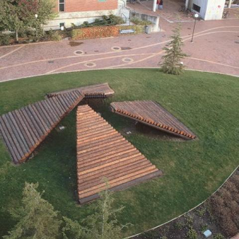
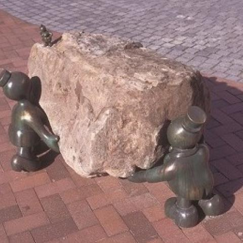
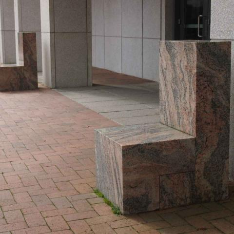

Sculptures Near the Biology Building

Log Ramps
- Lloyd Hamrol, 1974, reconstructed 1983 and 1995.
- Douglas fir and Western Red Cedar. 8.6' h. x 40' w.
- Hamrol’s ramps are positioned so that the viewer can
seek shelter underneath them or climb up to take in
the view surrounding the sculpture. Inspired by the
idea of a primitive Northwest shelter, Hamrol intended
his participatory sculpture to evoke ceremonial
architecture, protective enclosures, and the natural
resources of the Northwest.

Feats of Strength
- Tom Otterness, 1999.
- Bronze. 15" h.
- Otterness ́ sculptures have both serious and whimsical aspects.
In Haskell Plaza his bronze figures reinforce the idea of natural
and cultural forces at work. The small scale of the characters
calls attention to the overwhelming power of nature and
humanities’ ongoing feats. On a more playful level, the figures
may suggest faculty and students working and relaxing on campus.

Two-Part Chairs, Right Angle Version (a Pair)
- Scott Burton, designed 1983, fabricated 1987.
- African Juparana granite. 38 1/8” h.
- Known for transforming the idea of public art in the 1970s, Burton
integrated functional design into fine art. This two-part work
evolved out of his early “behavioral tableaux” where actors were
involved in staged confrontations. Here the viewers become
performers as they sit on the polished granite chairs, which may
appear as minimalist sculptures but offer themselves for functional
use.